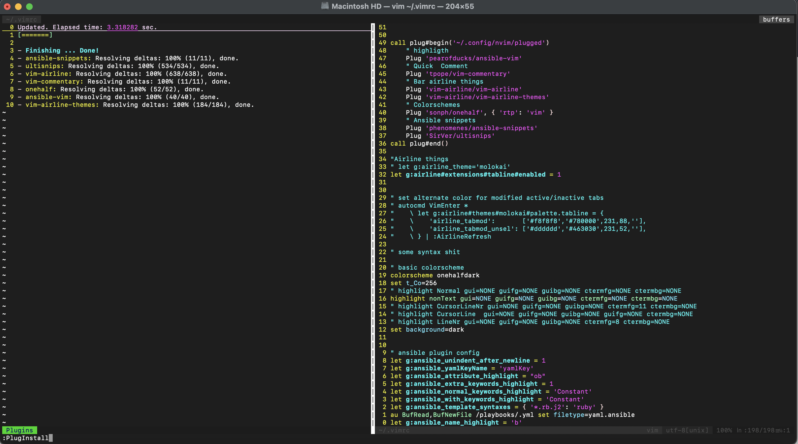

VIM Tutor:
nvim +TutorJump to end of File
Shift + GJump to beginn of file:
ggSearch & Replace:
:s/foo/bar/gMultiline comment:
gccSearch:
/Jump to Line:
:42Compare Two files:
vimdiff file1.txt file2.txtInsert Visual Block Mode:
Control + V, Shift + I or Delete with xVisual Line Mode:
Shift + VInstall Plugins
curl -fLo ~/.vim/autoload/plug.vim --create-dirs \
https://raw.githubusercontent.com/junegunn/vim-plug/master/plug.vimcreate ~/.vimrc file
autocmd FileType yaml setlocal ai ts=2 sw=2 et nu cuc
autocmd FileType yaml colo desert
set relativenumber
" spaces & tabs
set shiftwidth=4
set tabstop=4
set softtabstop=4
set smarttab
set expandtab
set autoindent
" Spell checking
set nospell
nnoremap <C-E> :setlocal spell! spelllang=en<CR>
nnoremap <C-G> :setlocal spell! spelllang=de<CR>
" Shortcutting split navigation, saving a keypress:
map <C-h> <C-w>h
map <C-j> <C-w>j
map <C-k> <C-w>k
map <C-l> <C-w>l
" set leader Key
let mapleader =" "
" set local leader to \
let maplocalleader = "\\"
" buffer navigation
nnoremap <C-P> :bprev<CR>
" map esc to jk
inoremap jk <esc>
call plug#begin('~/.config/nvim/plugged')
" highligth
Plug 'pearofducks/ansible-vim'
" Quick Comment
Plug 'tpope/vim-commentary'
" Bar airline things
Plug 'vim-airline/vim-airline'
Plug 'vim-airline/vim-airline-themes'
" Colorschemes
Plug 'sonph/onehalf', { 'rtp': 'vim' }
" Ansible snippets
Plug 'phenomenes/ansible-snippets'
" Plug 'SirVer/ultisnips'
call plug#end()
"Airline things
" let g:airline_theme='molokai'
let g:airline#extensions#tabline#enabled = 1
" set alternate color for modified active/inactive tabs
" autocmd VimEnter *
" \ let g:airline#themes#molokai#palette.tabline = {
" \ 'airline_tabmod': ['#f8f8f8','#780000',231,88,''],
" \ 'airline_tabmod_unsel': ['#dddddd','#463030',231,52,''],
" \ } | :AirlineRefresh
" some syntax shit
" basic colorscheme
colorscheme onehalfdark
set t_Co=256
" highlight Normal gui=NONE guifg=NONE guibg=NONE ctermfg=NONE ctermbg=NONE
highlight nonText gui=NONE guifg=NONE guibg=NONE ctermfg=NONE ctermbg=NONE
" highlight CursorLineNr gui=NONE guifg=NONE guibg=NONE ctermfg=11 ctermbg=NONE
" highlight CursorLine gui=NONE guifg=NONE guibg=NONE guifg=NONE ctermbg=NONE
" highlight LineNr gui=NONE guifg=NONE guibg=NONE ctermfg=8 ctermbg=NONE
set background=dark
" ansible plugin config
let g:ansible_unindent_after_newline = 1
let g:ansible_yamlKeyName = 'yamlKey'
let g:ansible_attribute_highlight = "ob"
let g:ansible_extra_keywords_highlight = 1
let g:ansible_normal_keywords_highlight = 'Constant'
let g:ansible_with_keywords_highlight = 'Constant'
let g:ansible_template_syntaxes = { '*.rb.j2': 'ruby' }
au BufRead,BufNewFile /playbooks/.yml set filetype=yaml.ansible
let g:ansible_name_highlight = 'b'Install Plugin from .vimrc config
:PlugInstall
Install zsh on mac cli Source ohmyzsh
sh -c "$(curl -fsSL https://raw.githubusercontent.com/ohmyzsh/ohmyzsh/master/tools/install.sh)"
vi ~/.zshrc
plugins=(
git
bundler
dotenv
macos
rake
rbenv
ruby
)